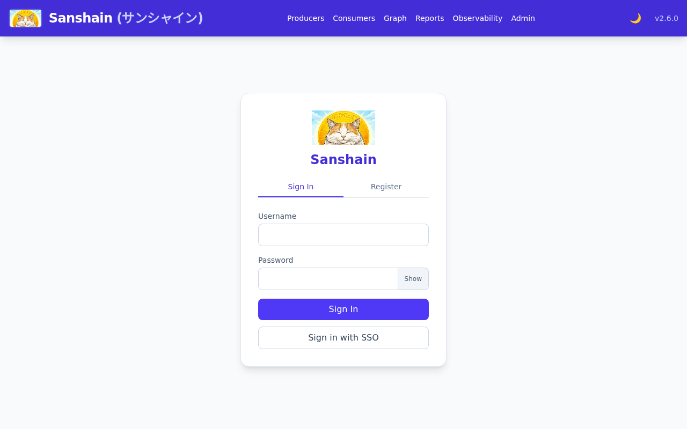
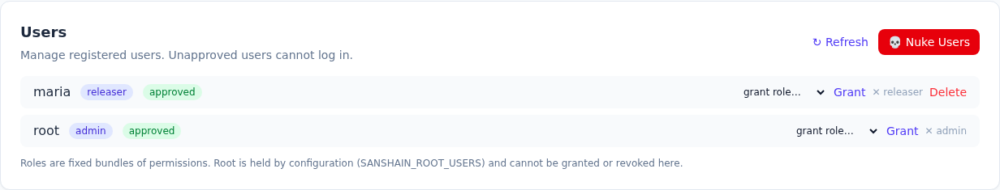
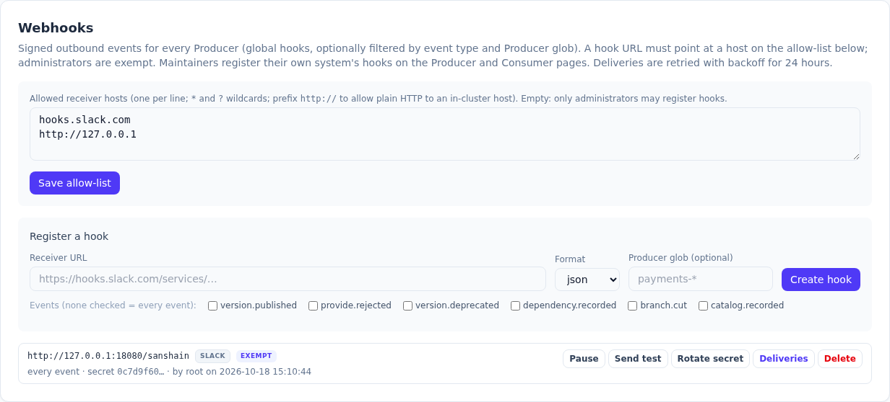
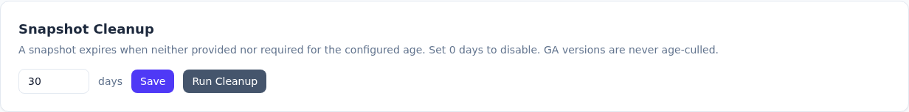
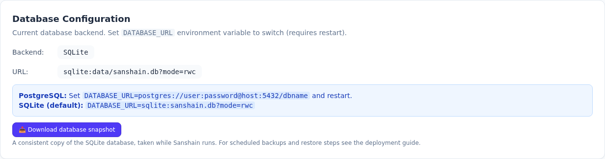
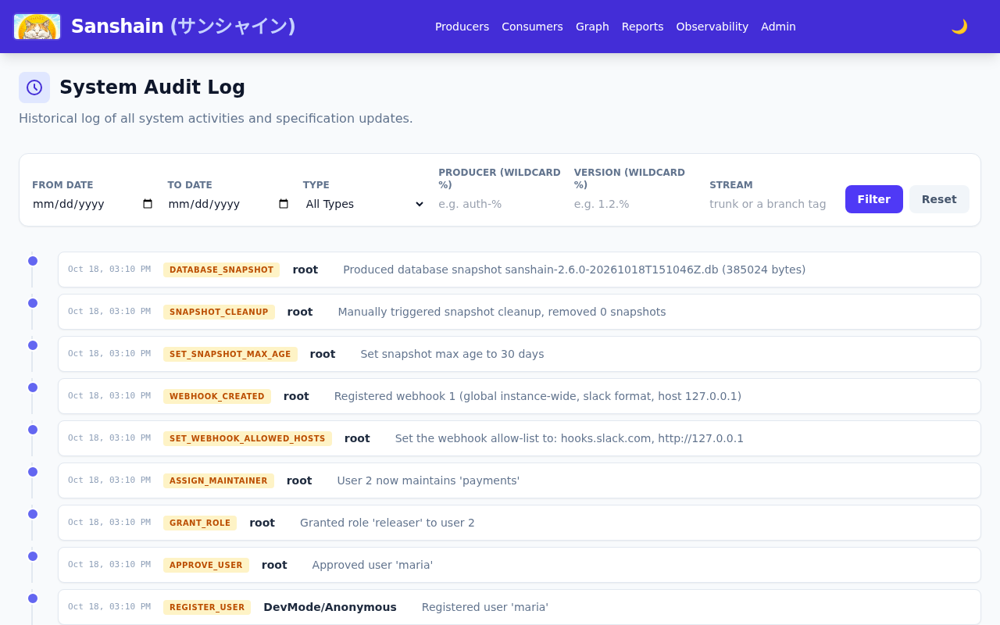
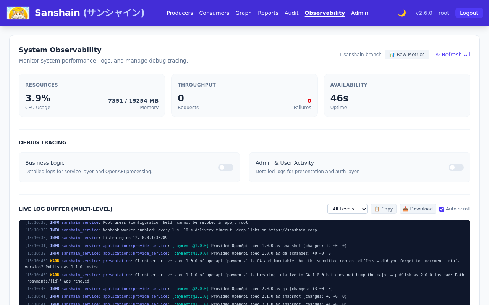

1. The Helm install
The operator installs the chart from the repository with PostgreSQL, an ingress and the backup
CronJob switched on. Below is
helm template with those values: the objects helm install would
create. It was not applied to a cluster.
What to notice
-
DATABASE_URLand the initial admin password live in the Secret, everything else in the ConfigMap. -
Two PersistentVolumeClaims:
sanshain-data(the chart's defaultpersistence, which an external PostgreSQL does not need:persistence.createPvc=falsedrops it) andsanshain-backupfor the CronJob. With thepostgres://URL the CronJob runspg_dump; with SQLite it would download the snapshot of step 8. - Both probes, liveness and readiness, are
GET /health. -
secrets.initialAdminPasswordiswalkthrough-adminhere, the throwaway value the recording instance was started with, so step 2 logs in with it.
Go deeper
Deployment: the Helm chart · Deployment: SQLite or PostgreSQL · Backup: the Helm CronJob · Configuration: environment variables
2. The first login and the admin password
On its first start the service creates the initial admin and prints the password to the log; here it is the throwaway value the Secret of step 1 carries, the one the recording instance was started with. The operator logs in, changes it, and finds that the session from before the change is gone.
The service log at first start
The second line names http://localhost:3000/admin.html whatever the instance's
public address is: it is written for the laptop case, not from PUBLIC_BASE_URL.

Login
Change the password
The old session afterwards
What to notice
- The password change answers a fresh session token and ends every other session of the account: a script that administers logs in again.
-
rootis held by configuration (SANSHAIN_ROOT_USERS, or the initial admin's name); its authority cannot be revoked from inside the application.
Go deeper
Authentication: the initial admin and root · Getting started: first login · Using the API: sessions and API tokens
3. OpenID Connect, configured
People sign in through the company's identity provider. OIDC is configured through the API
(the admin page has no OIDC form in 2.6.0): one PUT with the provider's values,
then a GET to see what is stored. No provider was reachable during the recording,
so this is the configuration only; the login itself is described in the chapter.
Configure
The stored state
Back to local accounts, for the rest of this story
In oidc mode nobody can register a local account, and step 4 registers one. The
mode goes back to local; the OIDC values stay stored, which is why the sign-in
form of step 2 still offers Sign in with SSO, and the audit log of step 9
shows both changes.
What to notice
-
The client secret is answered as
****; sending****back keeps the stored one, so a later edit cannot lose it. -
scopesgot its default;admin_groupgrants theadminrole to bearers of that claim value at login, and only grants. -
The redirect URL's origin is also the fallback for
PUBLIC_BASE_URL, the base of the webhook deep links in step 6.
Go deeper
Authentication: OpenID Connect · Authentication: modes · PUT /admin/auth-config
4. A user, a role, a maintainer scope, and the effect
Maria registers herself, which an administrator has to approve. She gets the
releaser role (she may publish GA and cut branches) and becomes a maintainer of
payments (she may delete its versions and manage its hooks). Then she logs in and
asks what she may do.
Registration
The user list, before approval
Approve
Grant the role
Make her a maintainer of payments
The effect: what maria's session may do

What to notice
-
A role is a fixed bundle of permissions:
releaseris exactlyrelease_ga. Nothing else of the admin page opens for maria. -
maintains: ["payments"]is the scoped permission: the Producer's routes admit her, every other Producer's refuse her. -
Granting
adminorreleaserneeds an administrator;manage_rolesalone grants the other roles.
Go deeper
Roles and permissions: roles · Roles and permissions: maintainers · Getting started: approving users · POST /admin/users/{id}/roles · POST /admin/producers/{name}/maintainers
5. The webhook allow-list
A fresh install sends nothing: hooks may only point at hosts the administrator approved. The
operator allows Slack and, with the http:// prefix, a plain-HTTP receiver inside
the cluster. The recording's receiver was a small local server; the text shows it as
receiver.sanshain.svc, the screenshots show its real address,
http://127.0.0.1:18080.
What to notice
-
A pattern is a host name with
*and?; ports are not matched; the list comes back trimmed and lower-cased. - The list binds maintainers. A hook registered by an administrator is exempt from it, for good, and the listing marks it so.
- It is checked again at every delivery: removing a host stops deliveries to it.
Go deeper
Webhooks: the allow-list · POST /admin/settings/webhook-allowed-hosts
6. A hook, a test delivery, and the signature checked
First the allow-list at work: maria, a maintainer of payments, tries to register
a hook for it at a host nobody allowed. Then root registers a global hook in Slack format at
the receiver; because root holds manage_settings the hook is marked
allow_list_exempt, whatever the list says. The operator sends a test event; the
worker delivers it within its interval; the receiver verifies the signature with the secret it
was given once.
A maintainer's hook at a host that is not allowed
Register, as root
Send a test event
What the receiver got
The receiver's check
The delivery log

http://127.0.0.1:18080, named receiver.sanshain.svc in the text
above.
What to notice
-
The
403names the allowed hosts; a maintainer's hook atreceiver.sanshain.svcorhooks.slack.comwould have gone through. An administrator's hook is exempt, soexempton the badge means "registered by someone the list does not bind". -
The secret (
whsec_…) is in the registration answer and nowhere else afterwards; the listing showssecret_hint. -
Three headers accompany every delivery:
Sanshain-Event,X-Sanshain-DeliveryandSanshain-Signature,t=…,v1=HMAC-SHA256("t.body"). -
The Slack format is a ready-made message; the link in it uses
PUBLIC_BASE_URL. -
status: deliveredafter one attempt; a failed one would retry on the backoff schedule for 24 hours and can be redelivered by hand.
Go deeper
Webhooks: hooks in three scopes · Webhooks: verifying the signature · Webhooks: retries and redelivery · POST /admin/webhooks · POST /admin/webhooks/{id}/test · GET /admin/webhooks/{id}/deliveries
7. Retention, and a cleanup run
Snapshots that nobody provides or requires any more should disappear. The operator sets the age and runs the cleanup once by hand to see what it does; from then on the scheduled pass does it.
Set the age
Run the cleanup now

What to notice
-
deleted: 0: this instance is minutes old and every snapshot was promoted; the pass only removes snapshots unused for the configured days. - GA versions are never age-culled;
0days switches the cleanup off. - Both calls are audit entries (step 9).
Go deeper
Administration: retention and cleanup · Glossary: snapshot expiry · POST /admin/settings/snapshot-max-age · POST /admin/cleanup/snapshots
8. The snapshot the CronJob fetches, and the restore
On SQLite the backup is one download, made by the engine (VACUUM INTO) so it is
consistent while the service runs. This is the call the Helm CronJob makes with a
full API token of an administrator. The restore below is the documented
procedure, written out for this snapshot; it was not performed on a cluster.
The download

The restore, as documented
What to notice
- The file name carries the instance version and a UTC stamp; the migration runner brings an older snapshot's schema up on the next start, a newer one does not restore.
-
This is the only administrative route that takes an API token (the job's one credential); a
read_onlytoken is refused. -
On PostgreSQL the route answers
409and the chart renders apg_dumpCronJob instead.
Go deeper
Backup: SQLite · Backup: restore · Backup: PostgreSQL · GET /admin/backup/sqlite
9. The audit log after all of this
Everything the operator did landed in the audit log with the acting user. The observability panel's call lists the newest entries; the audit page shows the same with filters and diffs.

What to notice
-
Administrative entries have
action_type: ADMINand adetailsline meant to be read as it is; spec updates carryservice,version,streamand a diff. -
A self-registration has no signed-in actor, so it is recorded under
DevMode/Anonymous; the approval names the administrator. -
Reading it needs
view_audit(admin and viewer roles);/admin/observability/audit-logs/exportgives the whole log.
Go deeper
Administration: the audit log · The web UI: the audit timeline · GET /admin/observability/audit-logs
10. The observability page and /metrics
The observability page shows resources, throughput, the live log buffer and the debug
switches; Prometheus scrapes
/metrics. The excerpt below is every sanshain_* line after both
stories: two rejected provides, one catalog push, one branch, one delivery, one MCP call.

What to notice
-
sanshain_version_rejected_totalby reason and Producer is the first thing to alert on: a pipeline keeps failing somewhere. -
sanshain_webhook_outbox_pendingclimbing whilesanshain_webhook_deliveries_total{outcome="failed"}climbs means a receiver is down or left the allow-list. - The HTTP metrics of the Axum layer are there too; the chapter lists every family.
Go deeper
Observability: Prometheus metrics · Observability: the page · Observability: logs